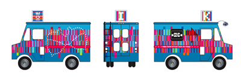
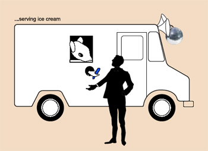
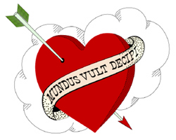
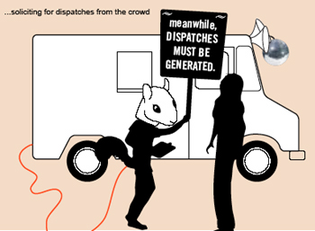
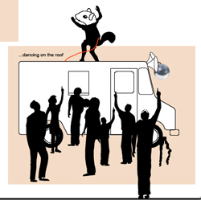
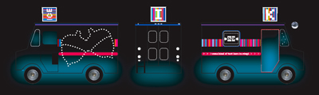

by Sylvie Parent Sylvie interviewed the artists Nancy Nowacek, Katie Salen, and Marina Zurkow about their residency project, Karaoke Ice, in August 2005.--ed  Sylvie Parent: Your team was selected to create an intervention, , for the Cesar Chavez Plaza in San José during the ISEA2006 Symposium and ZeroOne San Jose Festival. Is this the first time the 3 of you have worked together? Katie Salen: Yes, although we have been friends for a long time and have done projects informally with each other. Marina and Nancy have worked together under the name The Starlings for about a year doing small-scale public art projects.
SP: Why did you decide to join forces for this project? KS: I think we had been looking for an opportunity to work together, and the ISEA/ZeroOne residency seemed like the perfect fit for our collective interests and talents. We sat down and brainstormed about what we might like to propose, and things just clicked. We knew the collaboration would offer each of us a chance to riff off one another creatively and we got very excited about the chance to work together on something large scale. Marina Zurkow: We have very sympathetic focuses, with a lot of overlap: Katie’s most known for game work but has a keen sense of narrative and magic ;) ; Nancy’s most centered around graphic design and identity development, but has a background in sound as well; and I’ve been intent on character development in a variety of contexts. We all wanted the opportunity to create a physical, dimensional object that taps into and creates a social network, but also has a distinct persona. Nancy Nowacek: Yes—we three have very similar cultural and professional interests—we all like glitter and sparkle and big color, too—and have been looking for a way to channel those things into a collaborative project. SP: What is special about the particular space of San José in the context of the Festival? How did you perceive it? KS: I think one thing that really attracted us to this particular opportunity was the chance to do a project that engaged so many different, intersecting communities of people. Cesar Chavez Plaza is a site with deep historical and cultural significance in the context of immigration, worker’s rights, a social histories—it is also a site of temporary interactions, a plaza that people pass through on their way to work, or hang out for a few minutes to rest or eat. We loved the idea of considering these histories in light of the new populations of people that would descend on the plaza during the festival. NN: In addition to the cultural, historical meanings of the plaza and its daily usage we talked a lot about nomadic cultures—and the nomadic communities of conferences—and how we each make ourselves at home in a new place or group of people even temporarily. MZ: As San Jose doesn’t seem to be a very pedestrian environment, this festival will incite much running up against strangers. Couple that with the “trawling posses” mentality of conference goers: there’s a lot of potential there for mischief and spontaneity. SP: Can you tell us a few words about the project itself? How do you want visitors to get involved?  MZ: Karaoke Ice is a mash-up project, a mix between Charlie and the Chocolate Factory, Pimp My Ride [see also Pimp My Heart at ISEA--ed], and the Gong Show, with bits and pieces from the performance art world. We hope to elicit curiosity, competition and delight amongst a variety of passersby and participants by luring them with sweet icy salvos for the heat; oddly genred karaoke opportunities, and a performing squirrel magician. The truck herself has a personality that’s manifested in all the design decisions, and also in a broadsheet and daily “newsfeed” that she generates and distributes. NN: We’re looking forward to wildly inspired karaoke performances between friends, families, coworkers and tourists. We’re looking forward to the conversations sparked by the project between visitors idling in line beside the truck; and we’re curious to see who rises to the challenges solicited by our squirrel. SP: Obviously, this project is meant for urban space and relates perfectly with the Interactive City theme of the festival. Is there an online component to Karaoke Ice, can it be experienced remotely as well? MZ: There will be an online element, a web site on which you can find the truck’s present whereabouts, listen to and possibly vote on MP3 karaoke performances, read the daily dispatches, see photo documentation of the truck in situ, and possibly communicate... SP: This project creates a multisensorial experience (taste, sound, sight) for the participant. It also involves personification, performance, mobility, narrativity, community building and networking. How did you come up with such a rich and complex idea that has so much to offer to the public? KS: I think the richness of the project was a direct result of the richness of our collaboration (put the three of us in a room together and watch out…the ideas really fly!) paired with a careful, and I would have to say, thoughtful approach to the idea of making work that had real depth of experience for the audience, however brief their engagement with it might be. We wanted to do something that not only made sense as an object that “lived” in the world but that also offered a range of ways for people to participate. We developed a whole back story for our characters, to ground the experience in a kind of narrative logic that would intrigue and engage. To give you an example, our « truck » is named Lucci. She is a conjuror of deceptions and illusion, a manipulator of reality and gonzo journalist who has transformed herself into a mobile observation unit (truck), and a self-described karaoke buff. Her motto—"Mundus vult decipi” is written—literally—on her skin. Translated it reads: the world wants to be deceived. Remedios—driver, icy treat server, karaoke mc— is a mute squirrel cub with a penchant for cheap magic, who spent some time in the circus where he gained fame as “Remedios the Amazing,” leaving only after an unspeakable incident with a fellow synchronized swimmer. He is also Lucci’s best friend and an instigator of opinion surrounding the festival. The complexity emerged from the value of the collaboration and this kind of thinking. MZ: Part of our framework of consideration was: what if a virtual avatar was made manifest as something real out in the world? That led us down the labyrinth to Lucci and her agent/buddy Remedios (not to mention Lucci’s inspirational, eccentric grandmother).  Collaboration both provides constraints—you are pushed to be articulate, to have consensus through clarity and shared vision—and also offers a ground on which to go nuts, push far. We exercise autonomy and cooperation, the combination of which is fostering idiosyncratic richness. SP: With such components as the karaoke opportunities, the icy treats, the animal character, your project borrows a lot from popular culture. Do you think popular culture has the potential to stimulate new media art by reaching a larger audience? NN: We are voracious cultural consumers, and when we meet to work on the project, naturally spend the first bit reviewing our most recent experiences—movies, readings, fashion, art, television—so we can’t help but be inspired. But because our goal in this project with respect to the festival has always been to a ‘larger’ audience, pop culture offers multiple sets of languages common to a larger group of people to employ and exploit. This goes without saying, but we spend as much time thinking about our audience and their interests as we do our own. And in this regard, our project is every bit as much ‘design’ as it is ‘art’, but who’s counting? MZ: Is this new media? Is it art? It certainly is pop.We want to build bridges across exclusive or restrictive classification. You always walk a fine line when you make pop culture, precisely because the (pop) field looks to render and interpret its products as light, cute, sweet, or twisted. How can you produce something with a poetic that has meaning or resonance, which allows for real (not gratuitous or floundering) participation, and leaves viewers with a sensation of something special or transformative? There is also the issue that public art—which goes out to an imagined audience and needs to create its own context, to announce itself– has a very different problem set than institutionalized art, in which the expectant public passes through a portal into a space whose context is a given. But to directly answer your question, neither new media nor popular culture are singular forms; the conversations within + around art can stand to be mixed up, opened up, and made accessible in intelligent ways. In this sense, yes, I think that through pop material one can create a lively dialogue that bounces back and forth across various paradigms and constructs.< SP: This is a very exciting project and I thank you all for sharing your ideas about Karaoke Ice.  Links:
Sylvie Parent is a freelance curator and writer. |